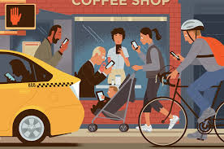
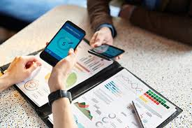

• Impacto del Teléfono en la Sociedad
“Las TIC ofrecen importantes oportunidades a la sociedad, pues la inmediatez, la ubicuidad y la reducción de la necesidad de traslado son las características más relevantes de estas herramientas” (Pascuas-Rengifo et al., 2020, p. 98). Actualmente, los teléfonos móviles tienen la capacidad de conectar a personas de todo el mundo, son fáciles de transportar y accesibles, por lo que la comunicación nunca había sido tan fácil. Los dispositivos móviles ahora tienen aplicaciones que nos ayudan a realizar las mismas tareas diarias sin enfrentarnos a ningún problema. En la mayoría de los países, se dice que los dispositivos móviles han sido buenos y tienen un impacto positivo en la educación, la economía, los negocios e incluso en la salud, como lo vemos en épocas de pandemia por la COVID-19. Hoy, la gente realmente no puede adaptarse en una ciudad moderna sin un dispositivo móvil. Sevillano García et al. (2020) señalan que “estos dispositivos les permiten a los estudiantes hacer videos, tomar notas, manejar documentos, desarrollar el hábito de la lectura, acceder a juegos educativos, interactuar con software y aplicaciones educativas y acceder a páginas web pedagógicas” (p. 100). (Traducción libre). Independientemente del tipo de dispositivo móvil que use la gente (básico, funcional o inteligente), la mayoría tiene opiniones similares sobre cómo su vida y las sociedades han sido afectadas por esta tecnología. La mayor contribución de los dispositivos móviles a la sociedad es la mejora de la productividad. Las personas actúan de manera más eficiente cuando están conectadas, especialmente porque pueden estarlo en cualquier momento, desde dónde sea y con quién deseen. Desde la mañana hasta el último minuto antes de irse a la cama, los dispositivos móviles son un elemento más de la tierra que todo el mundo debe tener para sobrevivir. Para Fulgoni (2016), “los dispositivos móviles representan la dislocación más importante en el flujo histórico de comunicación entre las marcas y los consumidores” (sección Conclusiones, párr. 8). (Traducción libre). Una de las características que hacen que los dispositivos móviles sean tan vitales para nuestra vida diaria es su eficiencia. La velocidad con la que se pueden realizar tareas en un dispositivo móvil es casi incomparable. De hecho, hay ocasiones en las que incluso pueden llegar a ser más rápidos que utilizar computadoras. El tamaño de un dispositivo móvil lo hace casi como una computadora en miniatura. Más allá de eso, los dispositivos móviles son una herramienta invaluable que puede entretener, educar, mejorar la seguridad y agregar comodidad a nuestra vida. Estos se han convertido en una parte integral de muchas personas debido a estas aplicaciones, por lo que se podría decir que ayudan a mantener una vida organizada de alguna manera. La disponibilidad de aplicaciones para contactos, proyectos y eventos relevantes, información personal y eventos futuros en teléfonos móviles dan fe de ello. Los dispositivos móviles tienen un impacto considerable en la sociedad, y afectan en casi todos los ámbitos de la vida humana. Las áreas destacadas, donde los impactos de los dispositivos móviles son obvios incluyen negocios, educación, salud y vida social. La tecnología ha cambiado drásticamente las normas culturales y los comportamientos individuales, los impactos son tanto positivos como negativos. Hay varias formas que pueden ayudar a controlar y minimizar el impacto negativo del uso de dispositivos móviles en la sociedad, al educar a los usuarios sobre cómo utilizarlos de manera inteligente. El impacto de los celulares en la sociedad moderna Topics: Health, Technology, Smartphone This paper was proofread by: Mateusz Brodowicz 14 min read Published: June 24, 2024
Transformación en la comunicación interpersonal.
El impacto del uso del celular en la comunicación interpersonal y la salud mental en la sociedad contemporánea
Topics: Health, Technology, Smartphone
This paper was proofread by: Mateusz Brodowicz
21 min read
Published: August 14, 2024
Table of contents
1. Introducción
1.1. Contextualización del tema
1.2. Justificación de la investigación
1.3. Objetivos de la investigación
2. Marco teórico
2.1. Definición de comunicación interpersonal
2.2. Tecnologías de la información y comunicación (TICs)
2.3. Salud mental y bienestar
3. Metodología de investigación
3.1. Diseño de la investigación
3.2. Muestra y procedimientos de recolección de datos
3.3. Análisis de datos
4. Impacto del uso del celular en la comunicación interpersonal
4.1. Cambios en los patrones de comunicación
4.2. Efectos en la calidad de la comunicación
5. Impacto del uso del celular en la salud mental
5.1. Adicción a los dispositivos móviles
5.2. Estrés y ansiedad asociados al uso excesivo
6. Recomendaciones y conclusiones
6.1. Implicaciones para la práctica clínica y la educación
6.2. Sugerencias para futuras investigaciones
Aithor writes your essay in 2 min, not days
AI undetectableAI undetectable
OriginalOriginal
ReferencesReferences
Topic finderTopic finder
Analyze the theme of revenge in Shakespeare's Hamlet
Suggested topics
Analyze the theme of revenge in Shakespeare's Hamlet
The Impact of COVID-19 Lockdown on Parents' Mental Health
Factors Influencing Companies' Compensation Strategies and Practices
The Role of Social Media in Modern Society
Ethical Considerations in Obtaining Informed Consent for Research Participation
Get started for free
1. Introducción
Es importante aclarar que en un mundo tan globalizado como el actual, el miedo a no estar al corriente de lo que sucede en el mundo se hace cada vez más patente. Las redes sociales nos han acercado al mundo, pero nos han alejado de la realidad. El tiempo personal se ha reducido, la diversión en compañía natural ha quedado relegada a un último plano, y es que las comunicaciones tecnológicas se han aumentado considerablemente, alcanzando en pleno siglo XIX un grado insospechado y rápido de "inferioridad humana". Los individuos de nuestra sociedad luchan día a día para ser los más rápidos, para no quedarse atrás, para ser los primeros en todo; presa de la ambición y del consumismo desmesurado que, nos guste o no, nos está metiendo poco a poco en una espiral sin retorno, vacía y sin lógica. Lo peor de todo es que nos comportamos de tal manera que no somos capaces de ver más allá de nuestro egoísmo. El ser individualista, preocupado por nuestro bienestar particular, incide directamente en la satisfacción personal, en las relaciones interpersonales, en la sociedad... A día de hoy, la persona no ve más allá de sus narices y, en su mundo particular, contribuye directamente a manchar, con la bonanza e insensatez de sus actos, a la madre naturaleza; bien merecido tenemos vivir como sufrimos: contaminación, incendios, corrupciones... y un sin fin de males cotidianos que nos impiden vivir en paz. Solo nos falta una vuelta de tuerca para conseguir la hecatombe final.
1.1. Contextualización del tema
La sociedad contemporánea ha sido testigo de un revolucionario cambio en volumen y velocidad que ha incidido significativamente en la forma en que los individuos se comunican interpersonal y grupalmente. Gran parte de este cambio se ha concentrado en el uso de teléfonos móviles, que han sido incorporados en la vida cotidiana de millones de personas. El uso creciente de esta forma particular de comunicarse ha tenido un impacto significativo en el desarrollo de la psicología social, de acuerdo con ello Weimann (2008), enfatiza que la telefonía móvil fomenta y facilita nuevas formas de interacción social y facilita el contacto directo sin necesidad de presencia física. Igualmente, la telefonía móvil es una herramienta indispensable en situaciones de emergencia. Consideraciones sobre la conveniencia de trabajar o no con el teléfono móvil encendido señalan además sobre las razones económicas y comerciales que justifican la presencia activa del teléfono, y una serie de motivaciones particulares y profesionales relacionadas con el contacto constante o con el deseo de reforzar la identidad social a través de la asignación de roles y funciones (Castells, 2007). Sin embargo, este cambio nos ha llevado a vivir en la era de la comunicación inmediata-hiperactiva, líquida y descartable; opiamos a partir de la exposición, el compartir y el estar en constante contacto, pero parece que el objetivo de formar lazos y construir identidades es un gran desafío (Pérez, 2017). Por un lado, hoy en día es común observar cómo con ayuda de la tecnología, los individuos podrían encontrarse a solo un "clic", supliendo con ello la necesidad y dificultad que implica una relación encuentro. Este efecto contraproducente sería favorable para complicar las relaciones interpersonales de algunos individuos dejando de lado incluso los procesos de conocimiento, comunicación y percepción que conlleva el relacionarse con otro ser humano cara a cara. Como consecuencia, los individuos se convierten cada vez más, según sus consumos tecnológicos en una mezcla de los talleres de costura del siglo XIX tejido en red y orden y dentro de esa maraña, la presencia del otro exige una identidad clara, homogénea si se quiere pero a la vez desequilibrante e innovadora (Pérez, 2017).
Evolución en el ámbito laboral y empresarial.
Movilidad es uno de los grandes ejes que guía el uso de la tecnología. El concepto usualmente se relaciona con atributos como la comodidad, flexibilidad, conectividad, entre otros. Si analizamos un poco más allá, el concepto genera un impacto directo en el desarrollo de nuevos negocios. Todas las compañías tienen personal que trabaja fuera de la oficina. Ya sea desde la modalidad “home work”, reuniones y/o viajes de un ejecutivo, o incluso empleados que directamente cumplen su rol fuera de la empresa, siempre es necesario contar con plataformas colaborativas.
 El beneficio de llevar el negocio en tiempo real hace que quienes están en el campo dispongan con la información necesaria para tomar las decisiones correctas y a su vez, sean capaces de crear nuevos datos de valor instantáneamente. Desde el hardware, el trabajo móvil es posible por la versatilidad de los dispositivos. Sin embargo, darle al personal un smartphone o tablet corporativa no siempre simplifica el trabajo. En cambio, muchas personas usan sus propios móviles ‘Bring Your Own Device’ para realizar tareas relacionadas al trabajo. La razón es que muchas personas prefieren centralizar todo en un solo gadget, más aún si esa persona tiene que estar moviéndose permanentemente. En este contexto, las soluciones reales se encuentran en aquellas herramientas a las cuales se puede acceder a toda la información necesaria desde cualquier dispositivo, con cualquier sistema operativo y desde cualquier lugar. Como característica excluyente, tales soluciones deben ofrecer la seguridad pertinente para proteger toda información de la empresa y el mantenimiento eficiente para que las funciones estén disponibles en todo momento. Por ejemplo, para el personal de venta móvil, estas herramientas facilitan la manera en la que se puede exponer un producto o servicio, además de trabajar colaborativamente en documentos con otros integrantes. La diferencia que existe en recabar información en forma analógica o digital para luego llevar a la oficina y utilizar esos datos para ejecutar en ese mismo momento es lo que determinará el diferencial competitivo de una organización.
Influencia en la educación y acceso a la información.
Los procesos de aprendizaje están totalmente influenciados por el uso intensivo de las tecnologías» (Rush, 2011), por lo cual es importante indicar cuál es la influencia del Smartphone en la dinamización de las estrategias pedagógicas de enseñanza y aprendizaje. Se aborda un estudio fenomenológico para conocer los fenómenos que se suscitan alrededor del uso del celular, que se asume como un dispositivo de diseño tecno-pedagógico ya la vez puede representar una fuente de distracción. En este trabajo se analizan investigaciones previas sobre las incidencias académicas y personales del uso del Smartphone en la universidad. Como resultado se obtuvo un conjunto de condiciones de análisis sobre sus ventajas y desventajas en los procesos de aprendizaje, orientados a la obtención de mejores resultados de interacción pedagógica y aprendizaje significativo. Abstracto Los procesos de aprendizaje están totalmente influenciados por el uso intensivo de las tecnologías (Rush, 2011). Por lo tanto, es importante determinar la influencia de los teléfonos inteligentes en la dinamización de las estrategias de enseñanza y aprendizaje. Se utiliza un estudio fenomenológico para comprender mejor los fenómenos derivados del uso de teléfonos móviles, considerados un dispositivo de diseño tecnopedagógico, pero que también pueden representar una fuente de distracción. En esta revisión, se analizan informes previos sobre las incidencias académicas y personales del uso de teléfonos inteligentes por parte de estudiantes universitarios. Se recopilaron condiciones de análisis, incluyendo las ventajas y desventajas del uso de estos dispositivos en los procesos de aprendizaje, con el fin de lograr mejores resultados en la interacción pedagógica y el aprendizaje significativo.
FUENTES 1
ir a el portal de historia del telefono
FUENTE IMAGEN 2

FUENTES CONFIABLES 3
3-ENTRA AQUI Y EN LOS DEMAS SI QUIERES MAS INFORMACION
FUENTES CONFIABLES 4